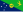
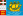

Dependent territory
| Part of the Politics series |
| Basic forms of government |
|---|
| List of countries by system of government |
|
|
A dependent territory, dependent area, or dependency (sometimes referred as an external territory) is a territory that does not possess full political independence or sovereignty as a sovereign state and remains politically outside the controlling state's integral area. As such, a dependent territory includes a range of non-integrated not fully to non-independent territory types, from associated states to non-self-governing territories (e.g. a colony).
A dependent territory is commonly distinguished from a country subdivision by being considered not to be a constituent part of a sovereign state. An administrative subdivision, instead, is understood to be a division of a state proper. A dependent territory, conversely, often maintains a great degree of autonomy from its controlling state. Historically, most colonies were considered to be dependent territories. Not all autonomous entities, though, are considered to be dependent territories.[1][failed verification] Most inhabited, dependent territories have their own ISO 3166 country codes.
Some political entities inhabit a special position guaranteed by an international treaty or another agreement, thereby creating a certain level of autonomy (e.g. a difference in immigration rules). Those entities are sometimes considered to be, or are at least grouped with, dependent territories,[2] but are officially considered by their governing states to be an integral part of those states.[2] Such an example is Åland, an autonomous region of Finland.
Summary
[edit]The lists below include the following:
Dependent territories
[edit].jpg){kind=link}
- Two states in free association, one dependent territory, and one Antarctic claim in the listing for New Zealand
- One uninhabited territory and two Antarctic claims in the listing for Norway
- 13 overseas territories (ten autonomous, two used primarily as military bases, and one uninhabited), three Crown dependencies, and one Antarctic claim in the listing for the United Kingdom
- 13 unincorporated territories (five inhabited and eight uninhabited) and two claimed but uncontrolled territories in the listing for the United States
Similar entities
[edit]- Six external territories (three inhabited and three uninhabited) and one Antarctic claim in the listing for Australia
- Two special administrative regions in the listing for China
- Two self-governing territories with autonomy in internal affairs in the listing for Denmark
- One autonomous region governed according to an act and international treaties in the listing for Finland
- Five autonomous overseas collectivities, one sui generis collectivity, and two uninhabited overseas territories (one of which includes an Antarctic claim) in the listing for France
- Three constituent countries with autonomy in internal affairs in the listing for the Netherlands
- One internal territory with limited sovereignty in the listing for Norway
.jpg){kind=link}
{kind=link}
Lists of dependent territories
[edit]This list includes all territories that have not been legally incorporated into their governing state, including several territories that are not on the list of non-self-governing territories of the General Assembly of the United Nations.[3] All claims in Antarctica are listed in italics.
New Zealand
[edit]New Zealand has two self-governing associated states, one dependent territory, and a territorial claim in Antarctica.[4][better source needed]
| Associated state | Administration | ISO 3166 country code |
|---|---|---|
| Self-governing state in free association with New Zealand since 1965. Cook Islands' status is considered to be equivalent to independence for international law purposes, and the country exercises full sovereignty over its internal and external affairs.[5] Under the terms of the free association agreement, however, New Zealand retains some responsibility for the foreign relations and defence of the Cook Islands. These responsibilities confer no rights of control and are exercised only at the request of the Cook Islands Government. The government of New Zealand does not consider it appropriate for the Cook Islands to have a separate seat at the United Nations, due to its continued use of the right of Cook Islanders to have New Zealand citizenship.[6] | CK | |
| Self-governing state in free association with New Zealand since 1974. Niue's status is considered to be equivalent to independence for international law purposes, and the country exercises full sovereignty over its internal and external affairs.[5] Under the terms of the free association agreement, however, New Zealand retains some responsibility for the foreign relations and defence of Niue. These responsibilities confer no rights of control and are exercised only at the request of the Government of Niue. The government of New Zealand does not consider it appropriate for the Niue to have a separate seat at the United Nations, due to its continued use of the right of Niueans to have New Zealand citizenship.[6] | NU | |
| Dependent territory | Administration | ISO 3166 country code |
| Territory of New Zealand. A UN-sponsored referendum on self-governance in February 2006 did not produce the two-thirds supermajority necessary for changing the current political status. Another one was in October 2007, which failed to reach the two-thirds margin.[7] Appears on the United Nations list of non-self-governing territories. | TK | |
| Dependent territory (uninhabited, claimed) |
Administration | ISO 3166 country code |
| This is New Zealand's Antarctic claim. Unlike Tokelau and the associated states (Cook Islands and Niue), the Ross Dependency is, according to the New Zealand government, constitutionally part of New Zealand.[8] |
Norway
[edit]Norway has one dependent territory and two Antarctic claims. Norway also possesses the inhabited islands of Svalbard where Norwegian sovereignty is limited (see below).
| Dependent territory (uninhabited) |
Administration | ISO 3166 country code |
|---|---|---|
| Dependency administered from Oslo by the Polar Affairs Department of the Ministry of Justice and the Police. | BV | |
| Dependent territory (uninhabited, claimed) |
Administration | ISO 3166 country code |
| Dependencies (subject to the Antarctic Treaty System) administered from Oslo by the Polar Affairs Department of the Ministry of Justice and the Police. | ||
United Kingdom
[edit]The United Kingdom has three "Crown Dependencies", thirteen "Overseas Territories" (ten autonomous, two used primarily as military bases, and one uninhabited), and one Antarctic claim.
United States
[edit]The United States has 13 "unincorporated" dependent territories under its administration and two claimed territories outside its control.[12] The uninhabited Palmyra Atoll is administered similarly to some of these territories, and is usually included on lists of U.S. overseas territories, but it is excluded from this list because it is classified in U.S. law as an incorporated territory.[13] The U.S. Constitution does not apply in full to the insular areas.[14]
| Unincorporated organized territory | Administration | ISO 3166 country code |
|---|---|---|
| Unincorporated organized territory of the U.S.; policy relations conducted through the Office of Insular Affairs of the Department of the Interior. Appears on the United Nations list of non-self-governing territories | GU or | |
| Unincorporated organized territory of the U.S. with Commonwealth status; federal funding administered by the Office of Insular Affairs of the Department of the Interior | MP or | |
| Unincorporated organized territory of the U.S. with Commonwealth status; policy relations conducted through the Executive Office of the President | PR or | |
| Unincorporated organized territory of the U.S. Policy relations conducted by the Office of Insular Affairs of the Department of the Interior. Appears on the United Nations list of non-self-governing territories | VI or | |
| Unincorporated unorganized territory | Administration | ISO 3166 country code |
| Unincorporated unorganized territory administered by the Office of Insular Affairs of the Department of the Interior. Appears on the United Nations list of non-self-governing territories | AS or | |
| Unincorporated unorganized territory (uninhabited)[note 3] |
Administration | ISO 3166 country code |
| Unincorporated unorganized territories of the U.S. administered by the Fish and Wildlife Service of the Department of the Interior | UM-81 | |
| UM-84 | ||
| UM-86 | ||
| UM-67 | ||
| UM-89 | ||
| UM-71 | ||
| Unincorporated unorganized territory of the U.S. administered by the Fish and Wildlife Service of the Department of the Interior from the Cabo Rojo National Wildlife Refuge in Cabo Rojo, Puerto Rico | UM-76 | |
| Wake Island | Unincorporated unorganized territory of the U.S. administered by the U.S. Air Force under an agreement with the Department of the Interior | UM-79 |
| Unincorporated unorganized territory (uninhabited, claimed) |
Administration | ISO 3166 country code |
| Bajo Nuevo Bank | Administered by Colombia. Claimed by the U.S. (under the Guano Islands Act) and Jamaica. A claim by Nicaragua was resolved in 2012 in favor of Colombia by the International Court of Justice (the U.S. is not a party nor recognises the court's jurisdiction). | |
| Serranilla Bank | Administered by Colombia. Site of a naval garrison. Claimed by the U.S. (since 1879 under the Guano Islands Act), Honduras, and Jamaica. A claim by Nicaragua was resolved in 2012 in favor of Colombia by the International Court of Justice (the U.S. is not a party nor recognises the court's jurisdiction). |
Lists of similar entities
[edit]The following entities are, according to the law of their state, integral parts of the state but exhibit many characteristics of dependent territories. This list is generally limited to entities that are either subject to an international treaty on their status, uninhabited, or have a unique level of autonomy and are largely self-governing in matters other than international affairs. It generally does not include entities with no unique autonomy, such as the five overseas departments and regions (French Guiana, Guadeloupe, Martinique, Mayotte, and Réunion) of France; the BES islands (Bonaire, Sint Eustatius, and Saba) of the Netherlands; Jan Mayen of Norway; and Palmyra Atoll of the United States. However, Svalbard of Norway is included, as it has some restrictions according to Svalbard Treaty, despite not having autonomy. Entities with only limited unique autonomy, such as Barbuda of Antigua and Barbuda; Sabah and Sarawak of Malaysia; the two autonomous regions (the Azores and Madeira) of Portugal; Nevis of Saint Kitts and Nevis; the Canary Islands and the two autonomous cities (Ceuta and Melilla) of Spain; and entities with non-recognized unique autonomy, such as Kurdistan of Iraq; Wa of Myanmar; Gaza of Palestine; Galmudug and Puntland of Somalia; Rojava of Syria; and Zanzibar of Tanzania are also not included. All claims in Antarctica are listed in italics.
Australia
[edit]Australia has six external territories in its administration and one Antarctic claim.
Although all territories of Australia are considered to be fully integrated in its federal system, and the official status of an external territory does not differ largely from that of a mainland territory (except in regards to immigration law), debate remains as to whether the external territories are integral parts of Australia, due to their not being part of Australia in 1901, when its constituent states federated (with the exception of the Coral Sea Islands, which was a part of Queensland).[15] Norfolk Island was self-governing from 1979 to 2016.[16] The external territories are often grouped separately from Australia proper for statistical purposes.[citation needed]
| External territory | Administration | ISO 3166 country code |
|---|---|---|
|  Christmas Island | Administered from Canberra by the Department of Infrastructure, Transport, Regional Development, Communications and the Arts[17] | CX |
| CC | ||
| NF | ||
| External territory (uninhabited) |
Administration | ISO 3166 country code |
| Administered from Canberra by the Department of Infrastructure, Transport, Regional Development, Communications and the Arts[17] | No unique ISO 3166 country codes | |
| Administered from Canberra by the Department of Agriculture, Water and the Environment[17] | HM | |
| External territory (uninhabited, claimed) |
Administration | ISO 3166 country code |
| Administered from Canberra by the Department of Agriculture, Water and the Environment[17] |
China
[edit]The People's Republic of China (PRC) has two special administrative regions (SARs) that are governed according to the constitution and respective basic laws. The SARs greatly differ from Mainland China in administrative, economic, legislative, and judicial terms including by currency, left-hand versus right-hand traffic, official languages, and immigration control. Although the PRC does claim sovereignty over Taiwan (governed by the Republic of China), it is not listed here as the PRC government does not have de facto control of the territory.
| Special administrative region | Administration | ISO 3166 country code |
|---|---|---|
| Former British colony. Special Administrative Region of the People's Republic of China since 1997 according to the Sino-British Joint Declaration, an international treaty registered with the United Nations. The Hong Kong Basic Law purports to provide for the territory to enjoy a "high degree" of autonomy per the "one country, two systems" model under the central government of China. Although the territory is not part of mainland China, it is officially considered an integral part of the People's Republic of China.[18][19][20] | HK or | |
| Former Portuguese colony. Special Administrative Region of the People's Republic of China since 1999 according to the Sino-Portuguese Joint Declaration, an international treaty registered with the United Nations. The Macao Basic Law provides for the territory to enjoy a high degree of autonomy per the "one country, two systems" model under the central government of China. Although the territory is not part of mainland China, it is officially considered an integral part of the People's Republic of China. | MO or |
Denmark
[edit]The Kingdom of Denmark contains two autonomous territories with their own governments and legislatures, and input into foreign affairs.[21]
| Autonomous territory | Administration | ISO 3166 country code |
|---|---|---|
| Autonomous since 1948.[21] A constituent part of the Kingdom of Denmark, but not of the European Union. Although it is not part of metropolitan Denmark, it is officially considered an integral part of the Kingdom of Denmark. | FO | |
| Autonomous since 1979.[21] A constituent part of the Kingdom of Denmark, but withdrew from the European Economic Community in 1985. Although it is not part of metropolitan Denmark, it is officially considered an integral part of the Kingdom of Denmark. | GL |
Finland
[edit]Finland has one autonomous region that is also subject to international treaties.
| Autonomous region | Administration | ISO 3166 country code |
|---|---|---|
| Åland is governed according to the Act on the Autonomy of Åland and international treaties. These laws guarantee the islands' autonomy in Finland, which has ultimate sovereignty over them, as well as a demilitarised status. | AX or |
France
[edit]France has overseas six autonomous collectivities and two uninhabited territories (one of which includes an Antarctic claim). This does not include its "standard" overseas regions (which are also overseas departments) of French Guiana, Guadeloupe, Martinique, Mayotte, and Réunion. Although also located overseas, they have the same status as the regions of metropolitan France. Nonetheless, all of France's overseas territory is considered an integral part of the French Republic.
| Overseas collectivity | Administration | ISO 3166 country code |
|---|---|---|
| Overseas collectivity since 2003; overseas country since 2004. Appears on the United Nations list of non-self-governing territories | PF or | |
| Seceded from Guadeloupe to become an overseas collectivity in 2007 | BL or | |
| Seceded from Guadeloupe to become an overseas collectivity in 2007. It is the only overseas collectivity that is fully part of the European Union. | MF or | |
|  Saint Pierre and Miquelon | Territorial collectivity since 1985. Overseas collectivity since 2003 | PM or |
| Overseas territory since 1961. Overseas collectivity since 2003 | WF or | |
| Sui generis collectivity | Administration | ISO 3166 country code |
| "Sui generis" collectivity[22] since 1998.[23] Appears on the United Nations list of non-self-governing territories | NC or | |
| Overseas state private property (uninhabited) |
Administration | ISO 3166 country code |
| The island is administered under the direct authority of the French government[24] by the French Minister of the Overseas. | FR-CP | |
| Overseas territory (uninhabited) |
Administration | ISO 3166 country code |
| TAAF (Terres australes et antartiques françaises) is an overseas territory since 1955, administered from Paris by an Administrateur Supérieur. The territory includes the Antarctic claim of Adélie Land.[25] | TF or |
Netherlands
[edit]The Kingdom of the Netherlands comprises three autonomous "constituent countries" in the Caribbean (listed below) and one constituent country, the Netherlands, with most of its area in Europe but also encompassing three overseas Caribbean municipalities—Bonaire, Sint Eustatius, and Saba (these three Caribbean municipalities are excluded here because they are directly administered by the Government of the Netherlands[27]). All citizens of the Dutch Kingdom share the same nationality and are thus citizens of the European Union, but only the European portion of the Kingdom is a part of the territory of the Union, the Customs Union, and the Eurozone while other areas have overseas countries and territory status.
| Constituent country | Administration | ISO 3166 country code |
|---|---|---|
| Defined as a "country" ("land") within the Kingdom by the Statute of the Kingdom of the Netherlands, Aruba obtained full autonomy in internal affairs upon separation from the Netherlands Antilles in 1986. Part of the Kingdom but not in Europe, its citizenship nonetheless includes status as citizens of the European Union (the Kingdom government coincides almost exactly with the Government of the Netherlands, and is responsible for defence, foreign affairs, and nationality law). | AW or | |
| Defined as a "country" ("land") within the Kingdom by the Statute of the Kingdom of the Netherlands, Curaçao and Sint Maarten were part of the Netherlands Antilles until it was dissolved in October 2010. Part of the Kingdom but not in Europe, their citizenship nonetheless includes status as citizens of the European Union (the Kingdom government coincides almost exactly with the Government of the Netherlands, and is responsible for defence, foreign affairs, and nationality law). | CW or | |
| SX or |
Norway
[edit]Norway has, in the Arctic, one inhabited archipelago with restrictions placed on Norwegian sovereignty — Svalbard.[28][29] Unlike the country's dependent territory (Bouvet Island) and Antarctic claims (see above), Svalbard is a part of the Kingdom of Norway.[30]
| Territory | Administration | ISO 3166 country code |
|---|---|---|
| This Arctic archipelago is the northernmost permanent civilian settlement in the world. Not incorporated into any county, it is administered by a governor appointed by the Norwegian government. Since 2002, its main settlement of Longyearbyen has elected a local government. Other settlements include the Russian mining community of Barentsburg, the research station of Ny-Ålesund, and the mining outpost of Sveagruva. The Svalbard Treaty of 1920 recognises Norwegian sovereignty (administered since 1925 as a sovereign part of the Kingdom of Norway) but established Svalbard as a free economic zone[28] and a demilitarised zone. | SJ or NO-21 |
Description
[edit]{kind=link}
{kind=link}
Three Crown Dependencies are in a form of association with the United Kingdom. They are independently administrated jurisdictions, although the British Government is solely responsible for defence and international representation and has ultimate responsibility for ensuring good government. They do not have diplomatic recognition as independent states, but neither are they integrated into the UK. The UK Parliament retains the ability to legislate for the crown dependencies even without the agreement of their legislatures. No crown dependency has representation in the UK Parliament.
Although they are British Overseas Territories, Bermuda and Gibraltar have similar relationships to the UK as do the Crown Dependencies. While Britain is officially responsible for their defence and international representation, these jurisdictions maintain their own militaries and have been granted limited diplomatic powers, in addition to having internal self-government.
New Zealand and its dependencies share the same governor-general and constitute one monarchic realm. The Cook Islands and Niue are officially termed associated states.
Puerto Rico (since 1952) and the Northern Mariana Islands (since 1986) are non-independent states freely associated with the United States. The mutually negotiated Covenant to Establish a Commonwealth of the Northern Mariana Islands (CNMI) in Political Union with the United States was approved in 1976. The covenant was fully implemented on November 3, 1986, under Presidential Proclamation no. 5564, which conferred U.S. citizenship on legally qualified CNMI residents.[31] Under the Constitution of Puerto Rico, Puerto Rico is described as a Commonwealth and Puerto Ricans have a degree of administrative autonomy similar to that of a citizen of a U.S. state. Puerto Ricans "were collectively made U.S. citizens" in 1917, as a result of the Jones–Shafroth Act.[32][33] The commonly used name in Spanish of the Commonwealth of Puerto Rico, Estado Libre Asociado de Puerto Rico, literally "Associated Free State of Puerto Rico", which sounds similar to "free association" particularly when loosely used in Spanish, is sometimes erroneously interpreted to mean that Puerto Rico's relationship with the United States is based on a Compact of Free Association and at other times is erroneously held to mean that Puerto Rico's relationship with the U.S. is based on an Interstate compact. This is a constant source of ambiguity and confusion when trying to define, understand, and explain Puerto Rico's political relationship with the United States. For various reasons Puerto Rico's political status differs from that of the Pacific Islands that entered into Compacts of Free Association with the United States. As sovereign states, these islands have the full right to conduct their foreign relations, while the Commonwealth of Puerto Rico has territorial status subject to U.S. congressional authority under the Constitution's Territory Clause, "to dispose of and make all needful Rules and Regulations respecting the Territory… belonging to the United States."[34] Puerto Rico does not have the right to unilaterally declare independence, and at the last referendum (1998), the narrow majority voted for "none of the above", which was a formally undefined alternative used by commonwealth supporters to express their desire for an "enhanced commonwealth" option.[34]
This kind of relationship can also be found in the Kingdom of the Netherlands, which is termed a federacy. The European continental part is organised like a unitary state. However, the status of its "constituent countries" in the Caribbean (Aruba, Curaçao, and Sint Maarten) can be considered akin to dependencies[35][36] or "associated non-independent states."
The Kingdom of Denmark also operates similarly, akin to another federacy. The Faroe Islands and Greenland are two self-governing territories or regions within the Kingdom. The relationship between Denmark proper and these two territories is semi-officially termed the Rigsfællesskabet ("Unity of the Realm").
Overview of inhabited dependent territories
[edit]| Name | Population (2016)[37] | Area (km2)[38] | Area (mi2)[38] | UN region | UN subregion | Sovereign state | Legal status[39] |
|---|---|---|---|---|---|---|---|
| 15,700 | 254 | 98 | Asia | Western Asia | Overseas territory (Sovereign Base Areas) | ||
| 29,013 | 1,580 | 610 | Europe | Northern Europe | Autonomous region | ||
| 54,194 | 199 | 77 | Oceania | Polynesia | United States | Unincorporated unorganized territory | |
| 15,100 | 91 | 35 | Americas | Caribbean | Overseas territory | ||
| 113,648 | 178.91 | 69.08 | Americas | Caribbean | Constituent country | ||
| 70,537 | 53.2 | 20.5 | Americas | Northern America | Overseas territory | ||
| 34,232 | 153 | 59 | Americas | Caribbean | Overseas territory | ||
| 57,268 | 264 | 101.9 | Americas | Caribbean | Overseas territory | ||
| 2,205 | 135 | 52 | Oceania | Australia and New Zealand | External territory | ||
| 596 | 14 | 5.4 | Oceania | Australia and New Zealand | External territory | ||
| 18,100 | 240 | 93 | Oceania | Polynesia | Associated state | ||
| 158,986 | 444 | 171 | Americas | Caribbean | Constituent country | ||
| 2,931 | 12,173 | 4,700 | Americas | South America | Overseas territory | ||
| 49,188 | 4,167 | 540 | Europe | Northern Europe | Denmark | Autonomous territory | |
| 285,735 | 1,399 | 1,609 | Oceania | Polynesia | Overseas collectivity (Overseas country) | ||
| 29,328 | 6.5 | 2.5 | Europe | Southern Europe | Overseas territory | ||
| 56,483 | 2,166,086 | 836,330 | Americas | Northern America | Denmark | Autonomous territory | |
| 162,742 | 544 | 210 | Oceania | Micronesia | Unincorporated organized territory | ||
| 63,026 | 65 | 25 | Europe | Northern Europe | Crown Dependency | ||
| 7,374,000 | 2,755 | 1,064 | Asia | Eastern Asia | Special administrative region | ||
| 88,195 | 572 | 221 | Europe | Northern Europe | Crown Dependency | ||
| 98,069 | 118.2 | 45.6 | Europe | Northern Europe | Crown Dependency | ||
| 650,900 | 115.3 | 44.5 | Asia | Eastern Asia | Special administrative region | ||
| 5,267 | 101 | 39 | Americas | Caribbean | Overseas territory | ||
| 275,355 | 18,576 | 7,172 | Oceania | Melanesia | Sui generis collectivity | ||
| 1,190 | 261.46 | 100.95 | Oceania | Polynesia | Associated state | ||
| 2,210 | 34.6 | 13.4 | Oceania | Australia and New Zealand | External territory | ||
| 53,467 | 464 | 179 | Oceania | Micronesia | Unincorporated organized territory (Commonwealth) | ||
| 57 | 43 | 17 | Oceania | Polynesia | Overseas territory | ||
| 3,411,307 | 9,104 | 3,515 | Americas | Caribbean | Unincorporated organized territory (Commonwealth) | ||
| 7,209 | 25 | 9.7 | Americas | Caribbean | Overseas collectivity | ||
| 5,633 | 394 | 152 | Africa | Western Africa | Overseas territory | ||
| 31,949 | 53.2 | 20.5 | Americas | Caribbean | Overseas collectivity | ||
| 5,595 | 242 | 93 | Americas | Northern America | Overseas collectivity | ||
| 41,486 | 37 | 14 | Americas | Caribbean | Constituent country | ||
| 2,667 | 61,022 | 23,561 | Europe | Northern Europe | Unincorporated area | ||
| 1,499 | 10 | 3.9 | Oceania | Polynesia | Dependent territory | ||
| 51,430 | 430 | 166 | Americas | Caribbean | Overseas territory | ||
| 102,951 | 346.36 | 133.73 | Americas | Caribbean | Unincorporated organized territory | ||
| Wallis and Futuna | 15,664 | 142 | 55 | Oceania | Polynesia | Overseas collectivity |
See also
[edit]- Colonisation
- Colony
- Gallery of flags of dependent territories
- Independence referendum
- List of administrative divisions by country
- List of autonomous areas by country
- List of countries by United Nations geoscheme
- Lists of former colonies, possessions, protectorates, and territories
- List of leaders of dependent territories
- List of sovereign states
- List of sovereign states and dependent territories by continent
- Suzerainty
- Vassal state
Notes
[edit]- ^ Each territory in the United States Minor Outlying Islands is labeled UM- followed by the first letter of its name and another unique letter if needed.
- ^ The following territories do not have ISO 3166-1 codes:
1: Akrotiri and Dhekelia
2: Ashmore and Cartier Islands
3: Coral Sea Islands - ^ Midway Atoll and Wake Island have a few people, but these territories are not permanently inhabited.
- ^ Willis Island is permanently staffed and occupied by a small team of meteorologists.
- ^ The Antarctic claim of Adélie Land (a district of the TAAF)[25] is not included within the ISO 3166 designation. The ISO designates the remainder of the TAAF the "French Southern Territories".[26]
References
[edit]Citations
[edit]- ^ "International Trusteeship System and Trust Territories | The United Nations and Decolonization". United Nations.
- ^ a b "United Nations General Assembly 15th Session – The Trusteeship System and Non-Self-Governing Territories (pages:509–510)" (PDF). Archived from the original (PDF) on March 20, 2012.
- ^ "Trust and Non-Self-Governing Territories (1945-1999)". United Nations. Archived from the original on 12 Jan 2017. Retrieved 20 Jan 2023.
- ^ Salesa, Damon Ieremia (2017). Island time : New Zealand's Pacific futures. Wellington, New Zealand: Bridget Williams Books. pp. 6–7. ISBN 9781988533506.
- ^ a b "Find a publication | New Zealand Ministry of Justice". Archived from the original on 2016-04-29. Retrieved 2013-11-14.
- ^ a b Conan, Neal (11 August 2015). "Pacific News Minute: Cook Islands Bid for UN Membership On Hold". Hawai'i Public Radio. Archived from the original on 9 December 2018. Retrieved 6 April 2019.
- ^ Connell, John (2009). "'We are not ready' : colonialism or autonomy in Tokelau". In Baldacchino, Godfrey; Milne, David (eds.). The case for non-sovereignty : lessons from sub-national island jurisdictions. Routledge. pp. 157–168. ISBN 9780415455503.
- ^ New Zealand and Antarctica. NZ Ministry of Foreign Affairs and Trade. 2010
- ^ CIA (2010-07-15). "Guernsey at the CIA's page". CIA. Retrieved 2010-07-15.
- ^ CIA (2010-07-15). "Jersey at the CIA's page". CIA. Retrieved 2010-07-15.
- ^ CIA (2010-07-15). "The Isle of Man at the CIA's page". CIA. Retrieved 2010-07-15.
- ^ "U.S. Insular Areas Application of the U.S. Constitution" (PDF). United States General Accounting Office. November 1997. Archived from the original (PDF) on 29 February 2020. Retrieved 24 November 2020.
- ^ "Definitions of Insular Area Political Organizations". U.S. Department of the Interior. 12 June 2015. Retrieved 6 April 2019.
- ^ "U.S. Insular Areas Applicability of Relevant Provisions of the U.S. Constitution" (PDF). Washington, D.C.: United States General Accounting Office. June 20, 1991. p. 4. Retrieved August 14, 2021.
- ^ Carney, Gerard (2006). The constitutional systems of the Australian states and territories. Canberra: Cambridge University Press. ISBN 978-0-521-86305-6.
- ^ Phillips, Keri (23 June 2016). "The end of Norfolk Island's self-government". ABC. Retrieved 11 November 2020.
- ^ a b c d "Territories of Australia". The Department of Infrastructure, Transport, Regional Development and Communications. 2020-02-28. Retrieved 2020-04-25.
The Australian Government, through the department, administers the Indian Ocean Territories of Christmas Island and the Cocos (Keeling) Islands, Norfolk Island, the Jervis Bay Territory, the Ashmore and Cartier Islands, and the Coral Sea Islands. The department also manages the Government's interests in the Australian Capital Territory, and the Northern Territory.
- ^ 广电总局批准31个境外频道在涉外宾馆等申请接收. Gov.cn (2006-12-30). Retrieved on 2013-07-12.
- ^ 2010年第六次全国人口普查主要数据公报（第1号） Archived 2012-06-18 at the Wayback Machine. Stats.gov.cn. Retrieved on 2013-07-12.
- ^ 項懷誠：香港是社保基金境外投資的首選地之一 Archived 2013-06-17 at the Wayback Machine. Big5.huaxia.com. Retrieved on 2013-07-12.
- ^ a b c Rakitskaya, Inna A.; Molchakov, Nikita Y. (2019). "Democratization of territorial constitution : current trends and the constitutional experience of Denmark". International Journal of Economics and Business Administration. 7 (1). Eleftherios Thalassinos: 166–172. ISSN 2241-4754. Retrieved 11 November 2020.
- ^ "Nouvelle-Calédonie Présentation" [New Caledonia Presentation]. Outre-Mer.gouv.fr (in French). Ministre des Outre-mer. Archived from the original on 21 May 2013. Retrieved 24 November 2020.
- ^ "Field Listing :: Dependency Status". CIA.gov/Library/Publications/Resources/The-World-Factbook/. Central Intelligence Agency. Retrieved 7 April 2019.
- ^ "Loi n° 55-1052 du 6 août 1955 portant statut des Terres australes et antarctiques françaises et de l'île de Clipperton" [Law n° 55-1052 of 6 August 1955 relating to the statute of the French Southern and Antarctic Lands and of the island of Clipperton]. LegiFrance.gouv.fr (in French). Légifrance. 6 August 1955. Retrieved 24 November 2020.
- ^ a b "Antarctica :: French Southern and Antarctic Lands". CIA.gov/Library/Publications/The-World-Factbook. CIA. 20 May 2020. Retrieved 3 June 2020.
- ^ "French Southern Territories". ISO.org. ISO. 26 November 2018. Retrieved 3 June 2020.
- ^ Dependencies and Areas of Special Sovereignty, U.S. Department of State. "Bonaire, Saba, and Sint Eustatius now fall under the direct administration of the Netherlands". Retrieved 17 June 2016.
- ^ a b "Spitsbergen Treaty". Wikisource. 9 February 1920. Retrieved 16 November 2020.
- ^ "The Svalbard Treaty". Governor of Svalbard. 9 April 2008. Archived from the original on 23 July 2011. Retrieved 24 March 2010.
- ^ Skagestad, Odd Gunnar (2004). "The Scope for Norwegian Commitments Related to International Research on Jan Mayen Island". In Skreslet, Stig (ed.). Jan Mayen Island in Scientific Focus (PDF). Springer Netherlands. p. 272. ISBN 978-1-4020-2955-4. Archived from the original (PDF) on 4 January 2014. Retrieved 15 November 2020.
- ^ CIA (2010-07-15). "Northern Mariana Islands at the CIA's page". CIA. Retrieved 2010-07-15.
- ^ The Louisiana Purchase and American Expansion: 1803–1898. By Sanford Levinson and Bartholomew H. Sparrow. New York: Rowman and Littlefield Publishers. 2005. Page 166, 178. "U.S. citizenship was extended to residents of Puerto Rico under the Jones Act, chap. 190, 39 Stat. 951 (1971) (codified at 48 U.S.C. § 731 (1987)")
- ^ CIA (2010-07-15). "Puerto Rico at the CIA's page". CIA. Retrieved 2010-07-15.
- ^ a b "December 2005 report of the President's Task Force on Puerto Rico's Status" (PDF). Archived from the original (PDF) on March 26, 2009.
- ^ "Europe :: Netherlands". CIA.gov/Library/Publications/The-World-Factbook. CIA. 10 June 2020. Retrieved 13 July 2020.
- ^ "Dependencies and Areas of Special Sovereignty". State.gov. United States Department of State. 7 March 2017. Retrieved 13 July 2020.
- ^ "Country Comparison :: Population". CIA. July 2016.
- ^ a b "Field Listing :: Area". CIA.
- ^ "Field Listing :: Dependency Status". CIA.
Sources
[edit] This article incorporates public domain material from The World Factbook. CIA.
This article incorporates public domain material from The World Factbook. CIA.
Bibliography
[edit]- George Drower, Britain's Dependent Territories, Dartmouth, 1992
- George Drower, Overseas Territories Handbook, TSO, 1998